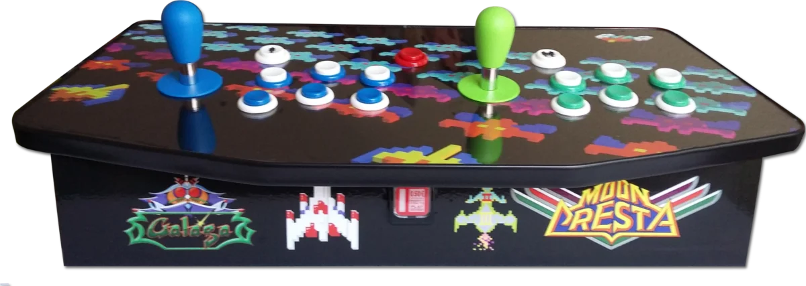
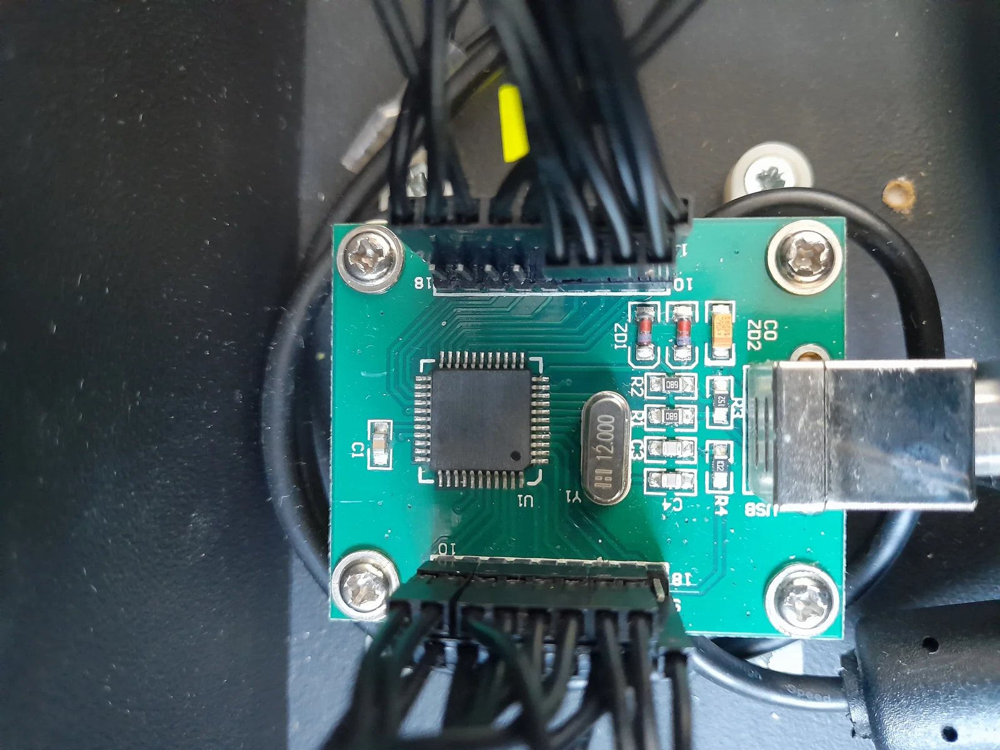
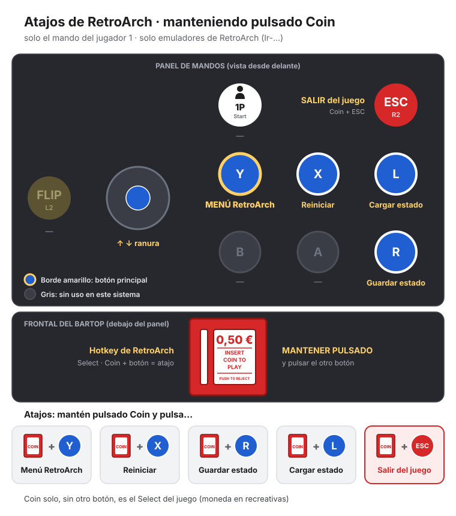
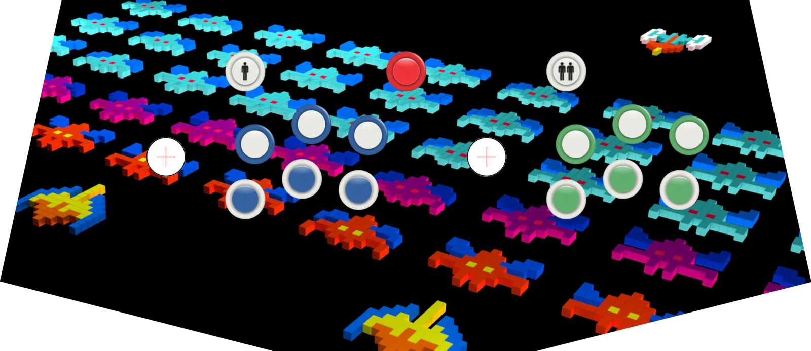
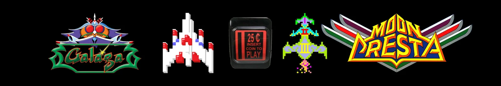
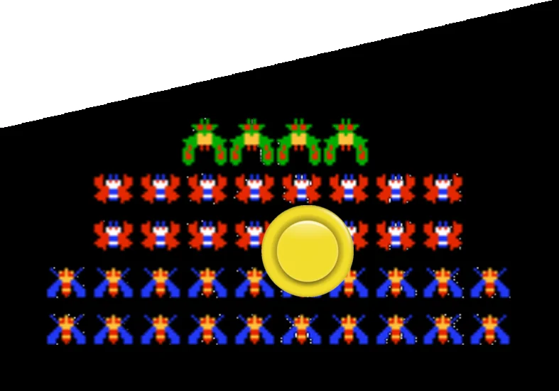
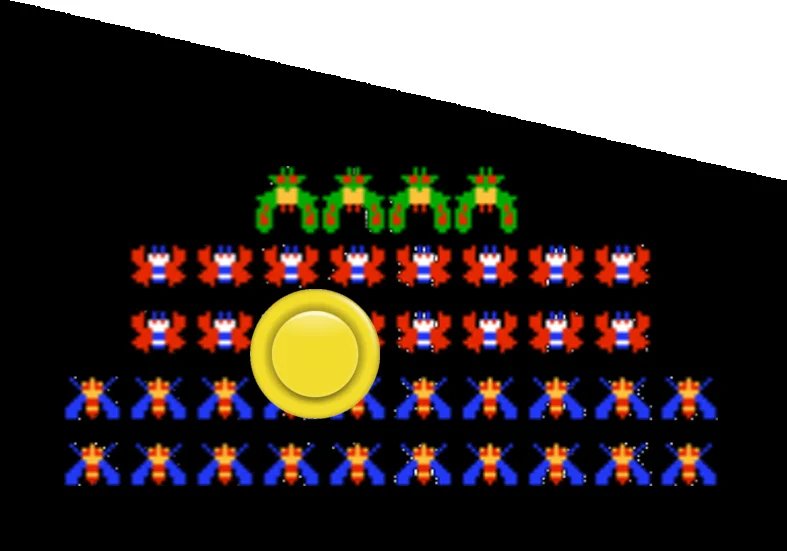
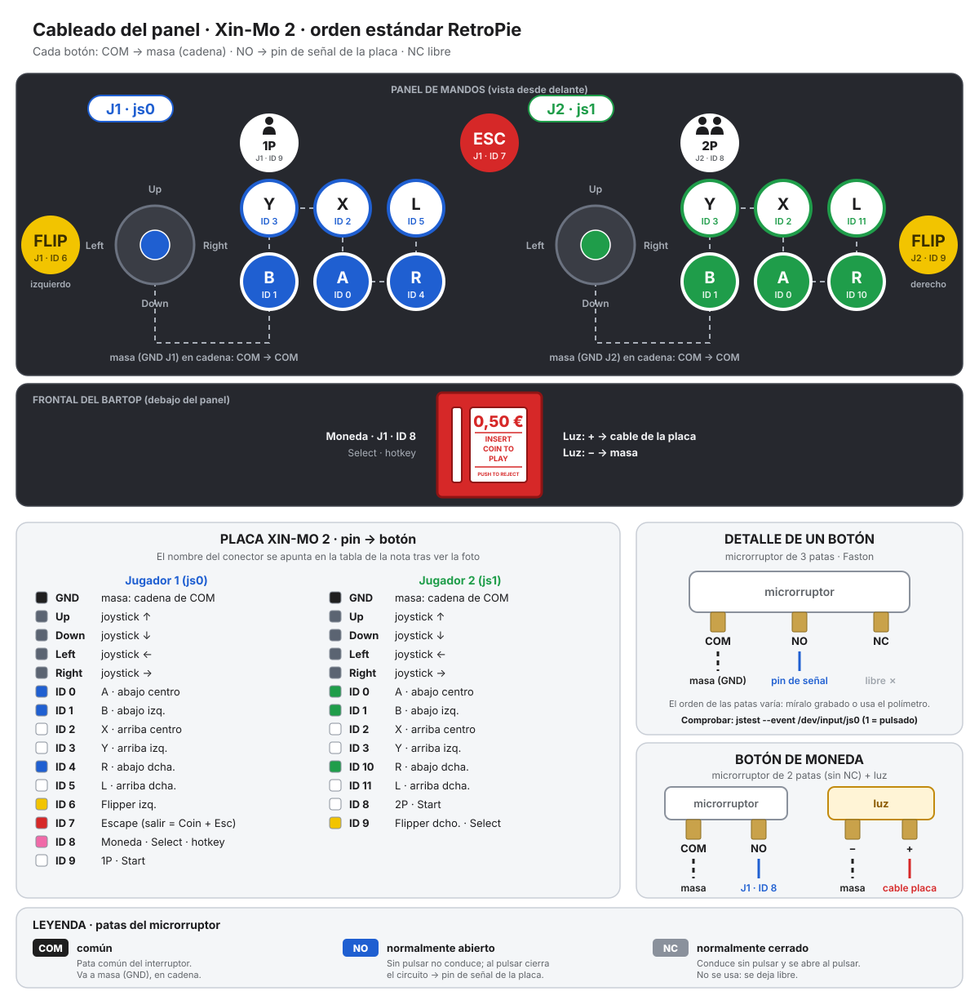

Hecha a mano
La bartop
Recreativa de sobremesa para dos jugadores, con una Raspberry Pi 3 y RetroPie, y un panel de mandos arcade conectado con una placa Xin-Mo 2. Los juegos están en un USB de 128 GB.
Fotos
La bartop de frente: el panel, con el joystick azul (J1) y el verde (J2), y el frontal con el botón de «Insert Coin».


La placa Xin-Mo 2:


Ficha técnica
| Parte | Qué lleva |
|---|---|
| Ordenador | Raspberry Pi 3 (1 GB de RAM), sin overclock |
| Sistema | RetroPie 4.4.3 sobre Raspbian 8 (Jessie) |
| Almacenamiento | microSD de 16 GB para el sistema y USB de 128 GB para los juegos |
| Mandos | Placa Xin-Mo 2: dos joysticks y 6 botones por jugador, más 1P, 2P, ESC, Coin y dos flippers laterales |
| Joysticks | Mando Magnético A03551 (P/MI) de Industrias Lorenzo, con pomo tipo bate: azul para el jugador 1 y verde para el jugador 2 |
| Mueble | Hecho a mano (2016-2017): tablero DF de 16 mm pintado de negro mate, perfil U-molding negro de 19 mm, vinilo laminado en el panel y metacrilato transparente de 2 mm encima. |
| Alimentación | Fuente de alimentación de la Raspberry Pi (RS Components) |
| Red | WiFi |
El panel
Disposición real (ver la foto y el diseño):
[1P] [ESC] [2P]
(J1) [Y] [X] [L] (J2) [Y] [X] [L]
azul [B] [A] [R] verde [B] [A] [R]
[FLIPPER IZQ.] en el lateral en el lateral [FLIPPER DCHO.]
frontal: [INSERT COIN] (Coin, con luz)
- J1 es azul (joystick y botones con aro azul) y J2 es verde.
- ESC es el botón rojo del centro; 1P y 2P, los blancos con el muñeco.
- Coin es el botón rectangular iluminado del frontal («25¢ Insert Coin to Play»).
- Los flippers son los botones amarillos de los laterales.
- Cada jugador tiene un joystick y dos filas de tres botones: arriba Y X L y abajo B A R, el orden estándar de RetroPie.
- 1P y 2P empiezan la partida; Coin mete una moneda.
- Los flippers de los laterales son para los pinballs.
- La placa se ve en el sistema como dos mandos, uno por jugador.
Atajos (manteniendo Coin):


| Atajo | Qué hace |
|---|---|
| Coin + ESC | Salir del juego |
| Coin + R | Guardar la partida |
| Coin + L | Cargar la partida |
| Coin + ↑ / ↓ | Cambiar la ranura de guardado |
| Coin + Y | Abrir el menú de RetroArch |
| Coin + X | Reiniciar el juego |
Los joysticks
Modelo A03551 «Mando Magnético» (P/MI) de Industrias Lorenzo, S.A. (Sant Climent de Llobregat, Barcelona), pensado para máquinas recreativas.
| Característica | Valor |
|---|---|
| Vuelta al centro | Magnética (imán), en lugar del muelle clásico: respuesta más sensible |
| Direcciones | 4 u 8, cambiando una palanca en la parte de abajo del mando |
| Microrruptores | Unos 10 millones de pulsaciones |
| Pomo | Alargado, tipo bate (33 mm de diámetro; el fabricante lo llama «pomo»): azul (J1) y verde (J2), con arandela del mismo color. Hay tres largos de palanca: 66; 75,8 y 82,9 mm |
| Montaje | Mando compacto; tubo separador de 24 mm para el panel |
Panel trasero
En la parte de atrás del mueble están las tomas que se sacan de la Raspberry Pi con alargadores, para no tener que abrir la bartop:
| Toma | Para qué |
|---|---|
| Alimentación | La fuente de la Raspberry Pi |
| HDMI | La pantalla (alargador HDMI de 20 cm desde la Pi) |
| USB | Un mando o un USB más sin abrir el mueble (alargador desde un USB de la Pi) |
Cuatro jugadores con la segunda bartop
Se hicieron dos bartops iguales, cada una con su placa Xin-Mo 2. En principio se pueden juntar para jugar a cuatro: el panel de la segunda bartop se conecta por USB a la toma trasera de esta, y la Raspberry Pi de esta bartop maneja los dos paneles.
- La placa: las dos Xin-Mo son el mismo modelo. El ajuste de arranque que separa la placa en dos mandos vale para todas las placas de ese modelo, así que el sistema vería cuatro mandos: J1 y J2 de esta bartop, y J3 y J4 de la otra.
- RetroArch: ya admite hasta 16 jugadores y, sin tocar nada, el mando 3 es el jugador 3 y el 4, el jugador 4.
- Juegos de 4 a la vez que ya están en el USB:
- FBA: Teenage Mutant Ninja Turtles (y Turtles in Time), The Simpsons, X-Men, Sunset Riders, Wild West C.O.W.-Boys of Moo Mesa, Mystic Warriors, Violent Storm, Captain Commando, los dos Dungeons & Dragons, Gauntlet y Gauntlet II, WWF WrestleFest, The Ninja Kids, Hook, Snow Bros. 2, Bubble Bobble II y Arkanoid Returns.
- De 3: Alien vs. Predator, Cadillacs and Dinosaurs, Knights of the Round, The King of Dragons y Undercover Cops.
- Todavía sin probar. Lo que hay que comprobar:
- Qué placa sale primero al arrancar (si los mandos 1-2 son los de esta bartop o los de la otra). Si salen al revés, se arregla en la configuración de RetroArch, indicando qué mando es cada jugador.
- El cableado de la segunda bartop: esta se recableó en 2026 al orden estándar de RetroPie, la otra probablemente no. Si los botones no coinciden, se ajusta en la configuración de los jugadores 3 y 4 o se recablea igual.
- Los atajos (Coin + botón) siguen siendo solo del jugador 1.
- Un cable USB lo bastante largo (el de la Xin-Mo es USB-B) y no conectar las dos bartops a la vez a la corriente si no hace falta: la segunda solo necesita el panel.
Diseño
Diseños propios hechos con GIMP (2016-2017), impresos en vinilo.


Frontal: Galaga, la nave, el botón de Insert Coin y Moon Cresta.


Laterales: los marcianitos de Galaga y el botón amarillo de flipper en cada lado.




Cómo está montada
- Los botones y los joysticks van cableados a la placa Xin-Mo 2, que se conecta por USB a la Raspberry Pi.
- El 23 de octubre de 2026 se recableó todo el panel al orden estándar de RetroPie y se comprobaron los 26 controles.
- El botón de Coin lleva luz.


Coste
Se hicieron dos bartops a la vez (2016-2017). Las compras de botones, joysticks y placas se hicieron por duplicado, y la madera, el vinilo y la pintura se repartieron entre las dos. Estos son los precios de una bartop.
| Parte | € | Qué incluye |
|---|---|---|
| Placas y electrónica | 79,62 | Raspberry Pi 3 (33,00), fuente de alimentación (8,68), portes (5,00), placa Xin-Mo XM-02 con cables (18,36), microSD SanDisk de 32 GB (12,99) y soportes para la placa (1,60) |
| Joysticks | 45,50 | 2 Mandos Magnéticos de Industrias Lorenzo, a 22,75 (Arcade Outlet) |
| Botones | 28,98 | 17 botones americanos cóncavos con micro (6 blancos, 3 azules, 3 verdes, 2 amarillos, 1 rojo, 1P y 2P; eBay) y portes, botón de crédito iluminado (4,50) y tapones para agujeros (2,52) |
| Madera y montaje | 24,98 | Tablero DF de 16 mm (1,5 tableros de 1200 × 600), adhesivo, bisagras, cierre magnético y tornillos |
| Vinilo | 13,18 | Un tercio de un vinilo laminado de 100 × 100 cm (Arcade Madrid) |
| Cables | 9,39 | Alargadores HDMI y USB, y cable HDMI de 3 m |
| Metacrilato | 8,45 | Panel transparente de 650 × 270 × 2 mm (Ceplasa) |
| Pintura | 8,26 | Imprimación, esmalte negro mate y cola blanca |
| U-molding | 6,30 | 1,8 m de perfil negro de 19 mm (Arcade Outlet) |
| Total por bartop | 224,67 | |
| Herramientas (para las dos) | 32,65 | Rodillo, cubeta, brocha, 2 sargentos, broca plana de 30 mm, corona bimetal de 29 mm y tapaporos |
- Las dos bartops costaron unos 450 € en piezas y materiales, más 33 € de herramientas.
- En la hoja también hay comparativas de otras tiendas y kits completos (Arcade Madrid, Factory Arcade, Arcade Outlet, Joystick Arcade, bartop.es, Game Room Solutions) que se miraron antes de comprar.
Juegos
180 juegos publicados en esta web, de 11 sistemas.
| Sistema | En la web | Probados en la bartop |
|---|---|---|
| Amstrad CPC | 8 | 5 |
| FBA (FinalBurn Alpha) | 75 | 67 |
| Game Boy Advance | 2 | 0 |
| Game Boy Color | 2 | 0 |
| MAME (lr-mame2003) | 2 | 0 |
| Mega Drive | 2 | 0 |
| Neo Geo | 72 | 0 |
| Nintendo 64 | 2 | 0 |
| PC Engine | 2 | 0 |
| PlayStation | 11 | 10 |
| PSP | 2 | 0 |